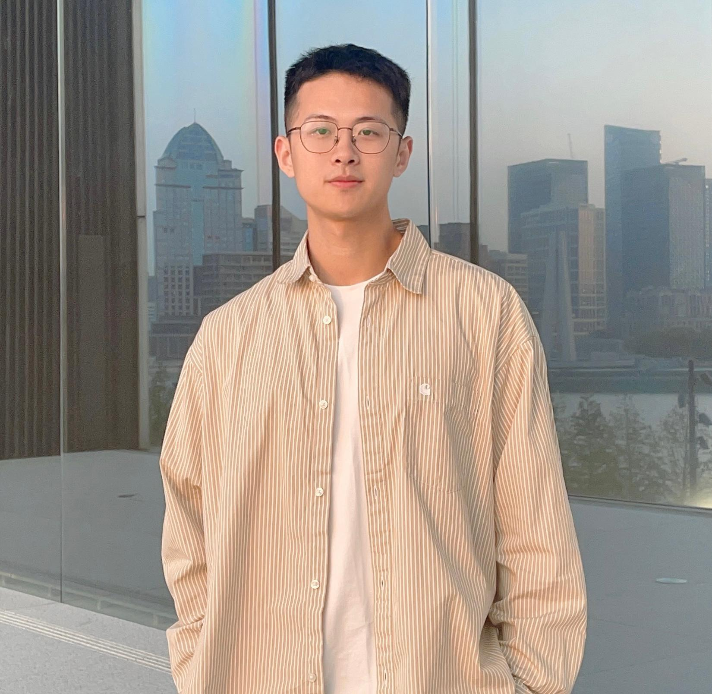
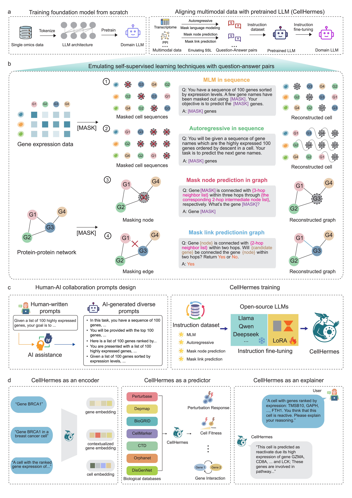
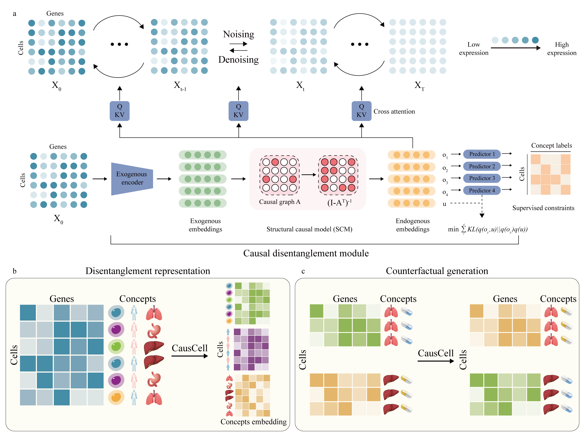
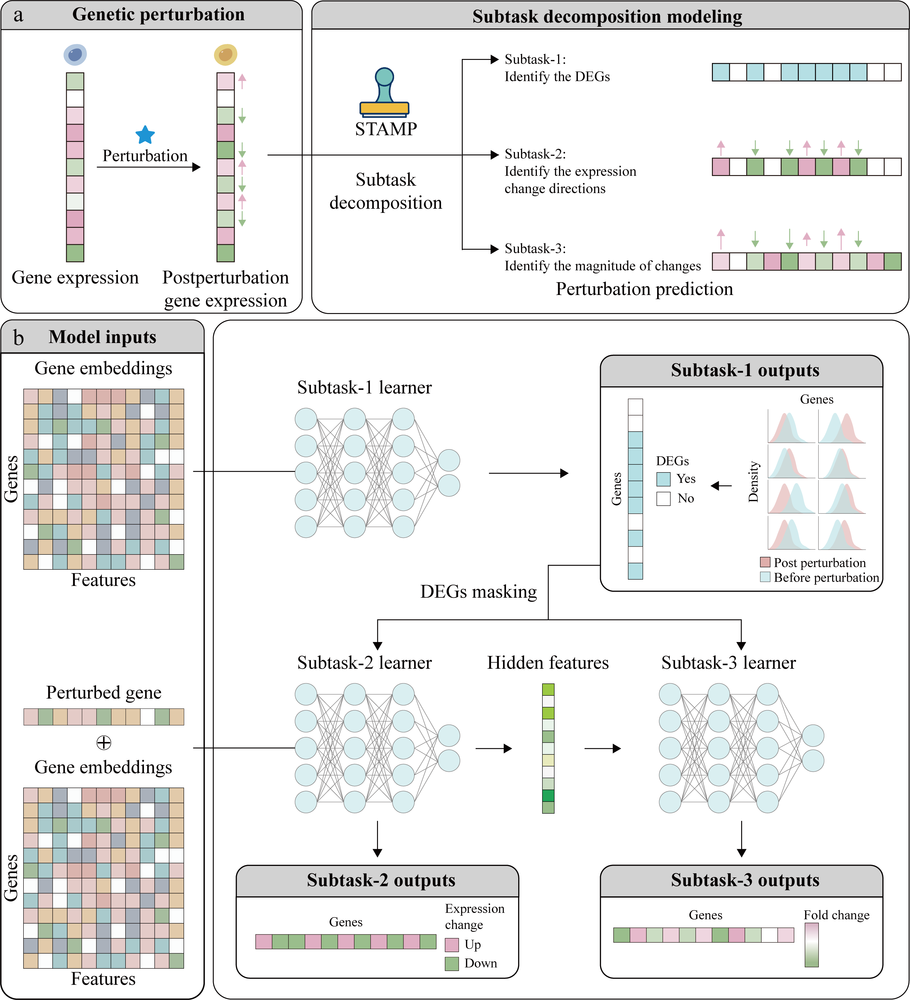
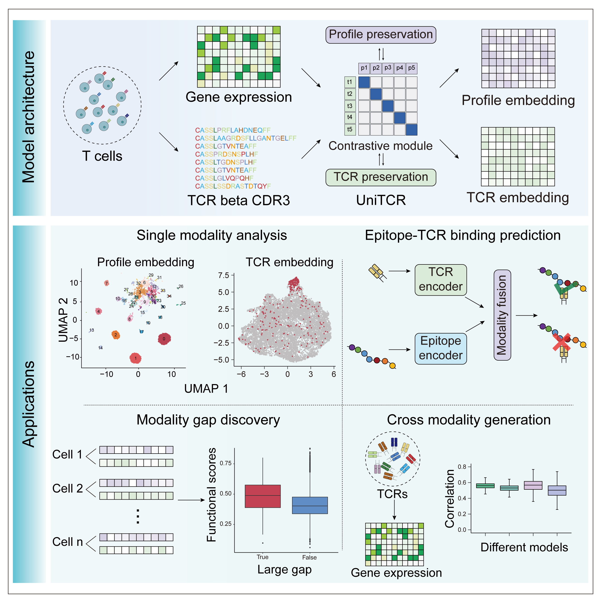
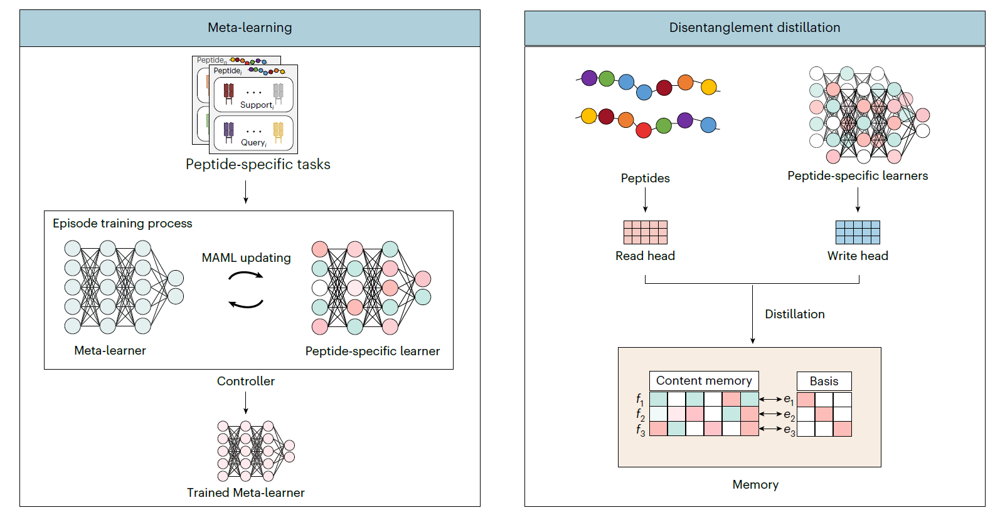

Yicheng Gao 高溢骋
PhD Candidate · Tongji University · Visiting Scholar at Helmholtz Munich
I am a PhD candidate in the Bioinformatics Department at Tongji University, supervised by Prof. Qi Liu in BM2 Lab. Currently, I am a Visiting Scholar at Helmholtz Munich, mentored by Prof. Fabian J. Theis. Previously, I was a Research Intern in the AI/ML group at Microsoft Research Asia, mentored by Dr. Caihua Shan and Dr. Dongsheng Li.
My research focuses on AI virtual cell construction, spanning cell disentanglement, perturbation prediction, multi-modal representation, and protein-protein interaction modeling. I am also interested in bridging LLMs and single-cell omics — using LLM reasoning to study omics data and building agent systems for single-cell biology.
Seeking faculty / postdoc positions starting 2026Research Directions
Cell Disentanglement & Counterfactual Generation
Cell Perturbation Prediction
Multi-modal Representation
Protein-Protein Interaction Modeling
News
Selected Publications





Benchmarking algorithms for generalizable single-cell perturbation response prediction
Benchmarking multi-slice integration and downstream applications in spatial transcriptomics data analysis
Weakly-supervised peptide-TCR binding prediction facilitates neoantigen identification
PerturBase: a comprehensive database for single-cell perturbation data analysis and visualization
Delineating the cell types with transcriptional kinetics
Foundation models in molecular biology
Reply to: The pitfalls of negative data bias for the T-cell epitope specificity challenge
Privacy-preserving integration of multiple institutional data for single-cell type identification with scPrivacy
Integrating multiple references for single-cell assignment
An ensemble strategy to predict prognosis in ovarian cancer based on gene modules
Awards & Grants
Experience
Visiting Scholar